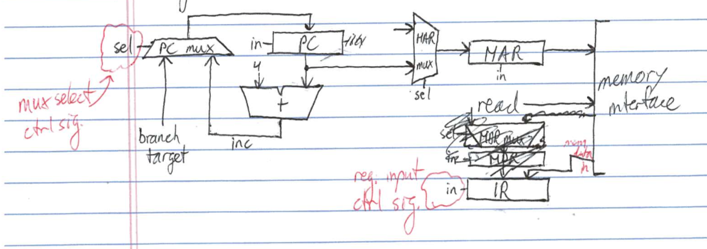
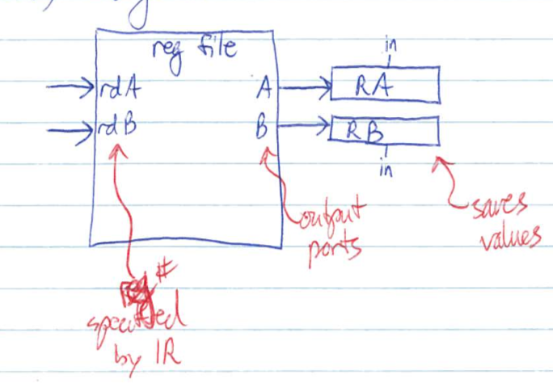
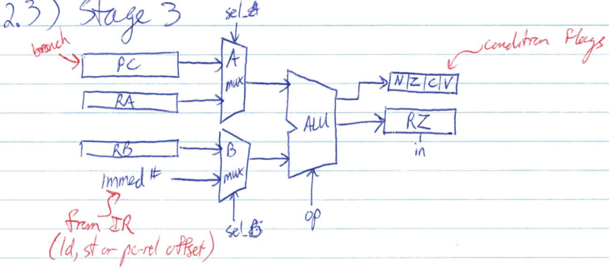
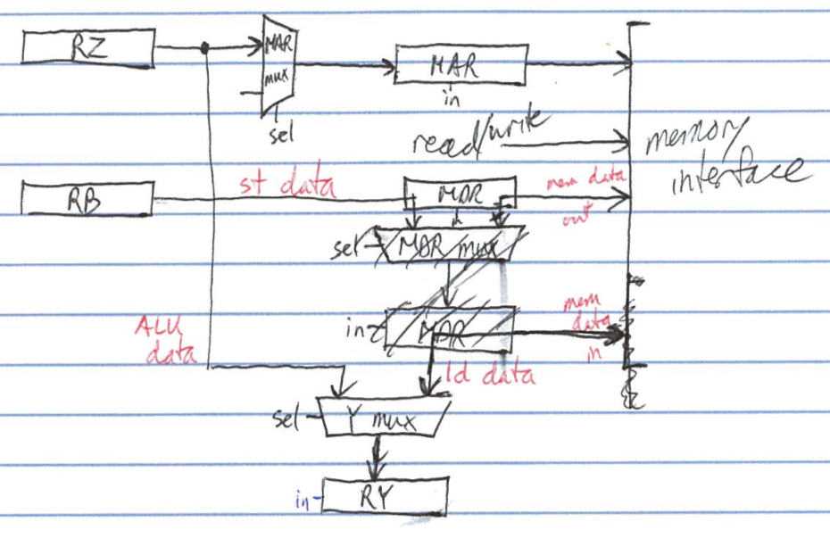
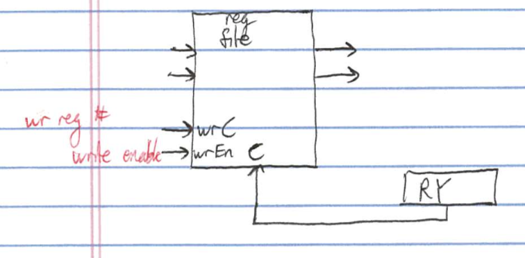
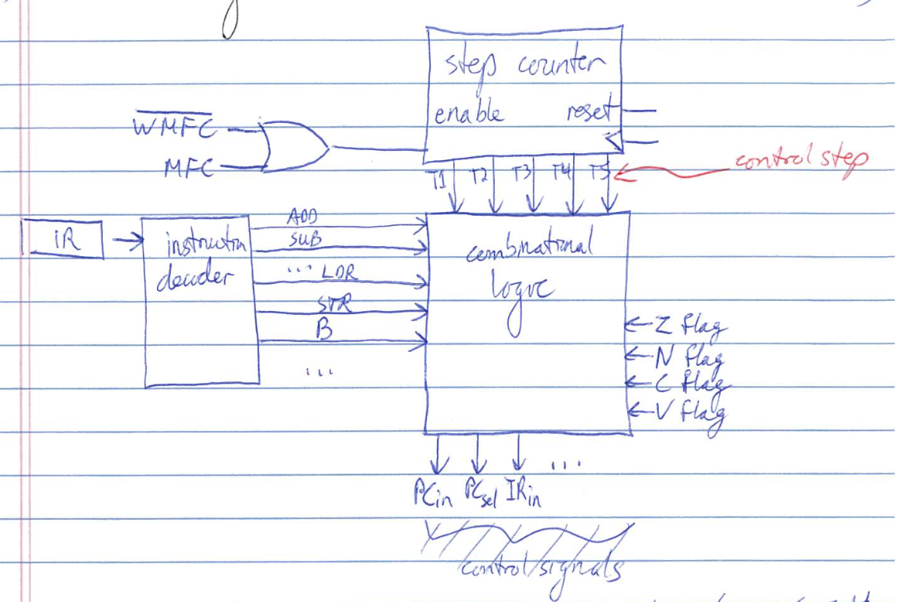

| Store/type | Data Processing | Load | Store | Branch |
|---|---|---|---|---|
| 1 - fetch | ADD r2, r0, r1 | LDR r1, [r0, #4] | STR r1, [r0, #4] | BEQ [PC, #16] |
| 2 - reg read | r0, r1 | r0 | r0, r1 | PC |
| 3 - use ALU | [r0] + [r1] | [r0] + 4 | [r0] + 4 | [PC] + 16 |
| 4 - use mem | - | read | write | - |
| 5 - reg write | r2<- | r1<- | - | if z == 1 PC <- |





See handout
e.g. ADD r2, r0, r1
| Stage | Action | Control Signals Asserted |
|---|---|---|
| 1 - fetch | MAR <- [PC] | MAR in, MARsel = PC |
| read memory | read | |
| IR <- mem data in | IRin, MDRsel = mem | |
| PC <- [PC] + 4 | PCsel = inc, PCin | |
| 2 - reg read | RA <- [r0], RA <- [r1] | rd A = 0, RAin, rd B = 1, RBin |
| 3 - ALU | RZ <- [RA] + [RB] | Asel = A, Bsel = B, ALUop = add, Zin |
| 4 - mem | RY <- [RZ] | Ysel = Z, RYin |
| 5 - reg wr | r2 <- [RY] | wrC = 2, wrEn |
e.g. LDR r1, [r0, #4]
| Stage | Action | Control Signals Asserted |
|---|---|---|
| 1 - fetch | MAR <- [PC] | MAR in, MARsel = PC |
| read memory | read | |
| IR <- mem data in | IRin, MDRsel = mem | |
| PC <- [PC] + 4 | PCsel = inc, PCin | |
| 2 - reg read | RA <- [r0] | rd A = 0, RAin |
| 3 - ALU | RZ <- [RA] + 4 | Asel = A, Bsel = offset, ALUop = add, Zin |
| 4 - mem | MAR <- [RZ] | MARsel = Z, MARin |
| read memory | read | |
| RY <- mem data in | Ysel = mem, RYin | |
| 5 - reg wr | r2 <- [RY] | wrC = 1, wrEn |
e.g. STR r1, [r0, #4]
| Stage | Action | Control Signals Asserted |
|---|---|---|
| 1 - fetch | MAR <- [PC] | MAR in, MARsel = PC |
| read memory | read | |
| IR <- mem data in | IRin, MDRsel = mem | |
| PC <- [PC] + 4 | PCsel = inc, PCin | |
| 2 - reg read | RA <- [r0] | rd A = 0, RAin |
| RB <- [r1] | rd B = 1, RBin | |
| 3 - ALU | RZ <- [RA] + 4 | Asel = A, Bsel = offset, ALUop = add, Zin |
| 4 - mem | MAR <- [RZ] | MARsel = Z, MARin |
| MDR <- [RB] | MDRin | |
| write memory | write | |
| RY <- mem data in | Ysel = mem, RYin | |
| 5 - reg wr | - | - |
e.g. BEQ [PC, #16]
| Stage | Action | Control Signals Asserted |
|---|---|---|
| 1 - fetch | MAR <- [PC] | MAR in, MARsel = PC |
| read memory | read | |
| IR <- mem data in | IRin, MDRsel = mem | |
| PC <- [PC] + 4 | PCsel = inc, PCin | |
| 2 - reg read | - | - |
| 3 - ALU | RZ <- [PC] + 16 | Asel = A, Bsel = offset, ALUop = add, Zin |
| 4 - mem | RY <- [RZ] | Ysel = Z, RYin |
| 5 - reg wr | if (z == 1), PC <- [RY] | PCsel = Y, PCin = (Z == 1) |

e.g. IRin = T1
PCin = T1 + T5 (Z flag == 1) BEQ
PCsel = T1
PC sel = T5
read = T1 + T4 LDR write = T4 STR
WMFC = read + write
See next chapter See previous chapter